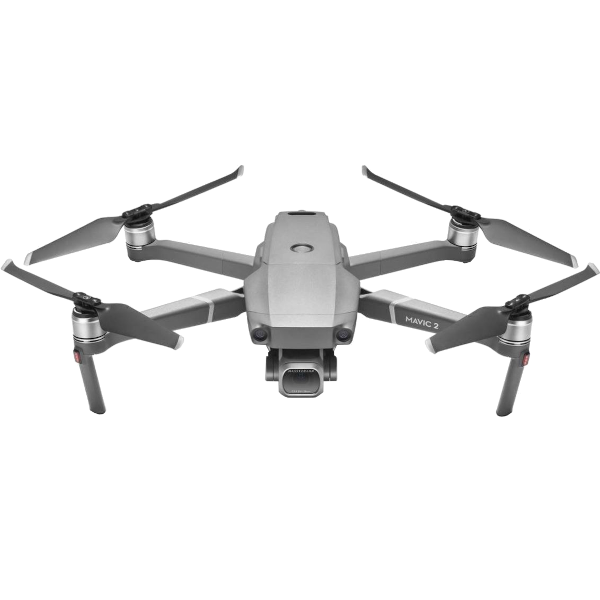

Drone DJI Mavic 2 Pro

| Drone DJI Mavic 2 Pro | |
|---|---|
| Localização: | Lab. 1.86 Edf. 7 |
| Responsável: | Susana Costas |
| Operador: | Utilizador |
| Princípio de Funcionamento: | Drone de Controlo Remoto |
| Fabricante: | DJI |
| Modelo: | Mavic 2 Pro |
| Tipo: | Drone |
| Website: | DJI |
Drone DJI Mavic 2, concebido para aquisição de imagens e vídeo aéreo em aplicações de investigação, monitorização ambiental, levantamento e documentação de áreas de interesse. O equipamento combina um sistema de voo autónomo e estabilizado com uma câmara de alta resolução montada num gimbal de três eixos, permitindo obter imagens aéreas estáveis e detalhadas.
O sistema permite realizar voos programados e operações de levantamento sobre diferentes tipos de terreno e ambientes, sendo adequado para monitorização de áreas costeiras, habitats, massas de água, vegetação e infraestruturas, bem como para documentação visual e aquisição de dados georreferenciados quando utilizado em conjunto com sistemas GNSS e software de processamento adequado.
Principais Aplicações
- Monitorização ambiental e costeira;
- Levantamento e documentação de áreas de estudo;
- Aquisição de imagens aéreas;
- Monitorização de vegetação e habitats;
- Inspeção visual de áreas e infraestruturas;
- Produção de ortofotografias e mapas a partir de imagens sobrepostas;
- Acompanhamento temporal de alterações ambientais;
Principais Vantagens:
- Elevada mobilidade e facilidade de transporte;
- Câmara estabilizada por gimbal de 3 eixos;
- Aquisição de imagens e vídeo de elevada resolução;
- Sistema de voo estabilizado e funcionalidades de assistência ao piloto;
- Sensores para deteção de obstáculos, dependendo da direção de voo;
- Possibilidade de realização de voos automatizados;
- Adequado para levantamentos de áreas extensas;
- Possibilidade de utilização de imagens para fotogrametria e cartografia;
- Integração com coordenadas GNSS para apoio à georreferenciação;
Específicações Técnicas:
| Específicação | Valor |
|---|---|
| Fabricante | DJI |
| Modelo | Mavic 2 Pro |
| Peso | 907 g |
| Dimensões | Fechado: 21.4x9.1x8.4 cm Aberto: 32.2x24.2x8.4 cm |
| Distância Diagonal | 35.4 cm |
| Veloc. de Subida Máx. | 5 m/s (S-mode) 4 m/s (P-mode) |
| Veloc. de Descida Máxima | 3 m/s |
| Velocidade Máxima | 72 k/h |
| GNSS | GPS+GLONASS |
| Camâra - Sensor | 1" CMOS; Pixeis efétivos:20 milhões |
| Lente | FOV: 77° 35 mm Abertura f/2.8-f/11 |
| Resolução de Imagens | 5472×3648 |
| Resolução de Video | 4K: 3840×2160 24/25/30p 2.7K: 2688x1512 24/25/30/48/50/60p FHD: 1920×1080 24/25/30/48/50/60/120p |
| Formato de Imagem | JPEG / DMG (RAW) |
| Formato de Video | MP4 / MOV (MPEG-4 AVC/H-264, HVEC/H.265) |